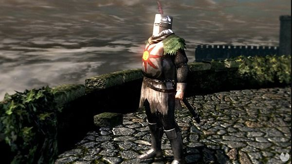

Hombre esta demasiado cabreado para morirse
Lebron James no lee el jefe al que se enfrenta y saca 4 cartas contra el psiquico
4 colegas se adentran en una mazmorra para salvar a un pibe random
No tienen ni idea de la que les espera, no va a salir vivo ni uno
Botanica descubre una planta que recupera extremidades perdidas
La botanica Olivia ha descubierto una hierba azul que devuelve miembros perdidos tras su ingestion
Señor mayor se niega jubilarse
Jose Gwyn dice que como se jubile se acabara el fuego

Señor tambien mayor tambien se niega a jubilarse
¿Porque esta sonando la misma musica?, Oh no maldita sea
Futbolista japones mete un gol por pura suerte
Segun sus declaraciones: "Yo estaba ahi y el balon llego por pura potra"
Cientificos resuelven la eterna duda
La bomba de hidrogeno ganaria por un pelo a un bebe tosiendo
Duelo a muerte con cuchillos en un paisaje precioso
La bailarina roja no es desafio menor, o dicho de otra forma, es desafio mayor
Dia betico
Los beticos pueden celebrar su dia favorito hoy, se espera una tremenda siesta seguida de una pachanga de furbo

Hackerman hackea google
En realidad solo le dio a inspeccionar elemento y toco algunas cosas, se ha flipado